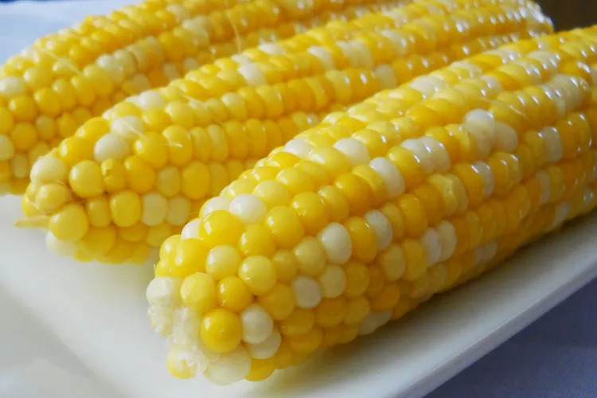

Sweet and Easy Corn on the Cob
Home

Description
Corn on the cob is cooked in boiled water with a little sugar and lemon juice for the sweetest,
tastiest corn. My mother-in-law gave me this easy recipe. Top the cooked corn with butter and
a pinch of salt for the best summer side dish there is!
Ingredients
- 2 tablespoons white sugar
- 1 tablespoon lemon juice
- 6 ears corn on the cob, husks and silk removed
Steps
- Gather all ingredients. Preheat oven to 450 degrees F (230 degrees C), and lightly grease a pizza pan.
- Place warm water in a bowl; add yeast and sugar. Mix and let stand until creamy, about 10 minutes.
- Add flour, oil, and salt to the yeast mixture; beat until smooth. You can do this by hand or use a stand mixer fitted with a dough hook to make it easier.
- Let rest for 5 minutes.
- Turn dough out onto a lightly floured surface and pat or roll into a 12-inch circle.
- Transfer to the prepared pizza pan.
- Spread crust with sauce and toppings of your choice.
- Bake in the preheated oven until golden brown, 15 to 20 minutes. Remove from the oven and let cool for 5 minutes before serving.